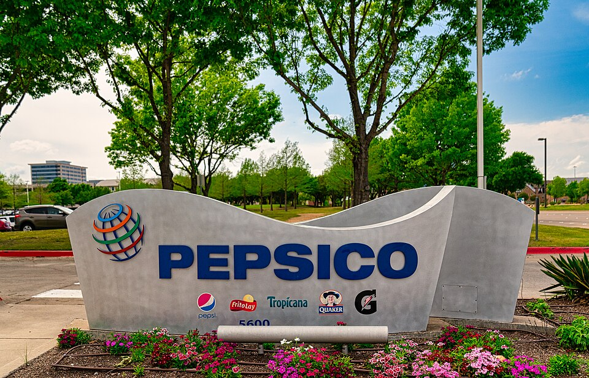
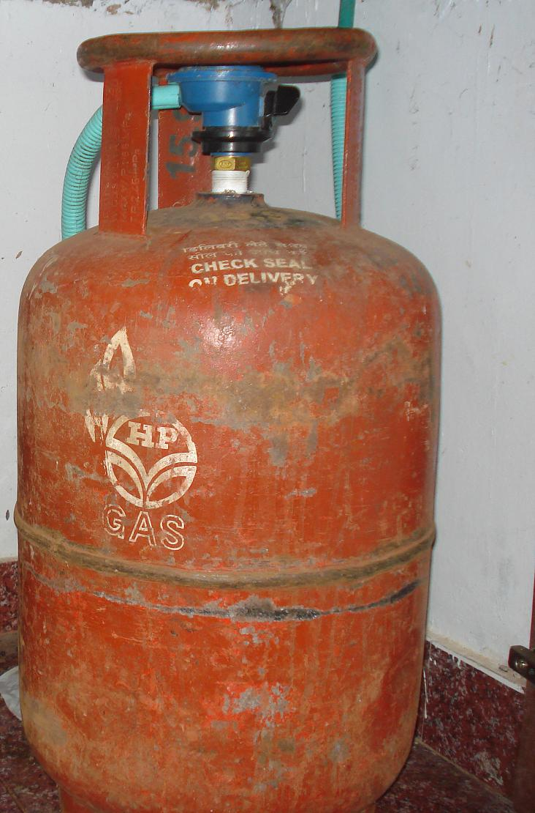

व्यापार

व्यापारपंजाब के तीन भाइयों का घरेलू नुस्खा बना लाहौरी जीरा, ₹1,112 करोड़ के कारोबार की ओर अग्रसर
पंजाब के तीन कजिन भाइयों द्वारा शुरू की गई जीरा ड्रिंक 'लाहौरी जीरा' ने बाजार में पकड़ मजबूत की है। कंपनी का सालाना कारोबार ₹1,112 करोड़ तक पहुंचने का अनुमान है।
व्यापारFSSAI ने बिसलेरी के पानी के सैंपल को असुरक्षित बताया, मुकदमा चलाने की मंजूरी दी
भारतीय खाद्य सुरक्षा एवं मानक प्राधिकरण ने बिसलेरी के पैकेज्ड ड्रिंकिंग वॉटर के एक सैंपल को असुरक्षित करार देते हुए कंपनी पर मुकदमा चलाने की मंजूरी दी है। बिसलेरी ने पानी को सुरक्षित बताते हुए अपना पक्ष रखा है।
 व्यापार
व्यापारभारत और पाकिस्तान में सोने के दाम, जानें किस देश में हुई ज्यादा गिरावट
नवंबर के मध्य में भारत और पाकिस्तान दोनों देशों में सोने की कीमतों में गिरावट दर्ज की गई। आंकड़ों के अनुसार, प्रतिशत के लिहाज से भारत में सोना पाकिस्तान की तुलना में अधिक सस्ता हुआ है।
व्यापारNvidia के शेयरों में एक दिन में रिकॉर्ड तेजी, CEO जेन्सेन हुआंग की हुई वापसी
अमेरिकी चिप निर्माता कंपनी Nvidia के शेयरों में एक दिन में 31 प्रतिशत से अधिक की तेजी दर्ज की गई है। जेन्सेन हुआंग के दोबारा सीईओ बनने के बाद कंपनी के बाजार पूंजीकरण में भारी इजाफा हुआ है।
व्यापार8वें वेतन आयोग के सामने डिफेंस यूनियन ने रखी बीमा और सैलरी बढ़ाने की मांग
भारतीय प्रतिरक्षा मजदूर संघ ने 8वें वेतन आयोग के सामने 73 मांगें रखी हैं। इसमें बीमा कवर ₹30 हजार से बढ़ाकर ₹15 लाख करने और न्यूनतम वेतन बढ़ाने का प्रस्ताव शामिल है।
व्यापारसोना और चांदी के भाव में तेजी, एमसीएक्स पर कीमतें बढ़ीं
गुरु नानक जयंती के अवसर पर शेयर बाजार बंद रहने के बीच एमसीएक्स पर सोने और चांदी की कीमतों में बढ़त दर्ज की गई है।
व्यापारपंजाब में दूध की कीमतें बढ़ाने की मांग, डेयरी किसानों ने दी आंदोलन की चेतावनी
पंजाब के प्रोग्रेसिव डेयरी फार्मर्स एसोसिएशन ने दूध खरीद दरों में 4 रुपये प्रति किलोग्राम की बढ़ोतरी की मांग की है। मांग पूरी न होने पर 5 दिसंबर 2026 से आंदोलन की चेतावनी दी गई है।
व्यापारसोने में मिलावट के दावों के बीच बीआईएस ने की सजग रहने की अपील
सोने में रेनियम की मिलावट और सीएजी रिपोर्ट में निगरानी कम रहने के दावों के बीच, बीआईएस ने खरीदारों को एचयूआईडी कोड सत्यापित करने और हॉलमार्क वाले गहने ही खरीदने की सलाह दी है।
व्यापारफिल्म 'रामायण' की कमाई 1700 करोड़ के पार, 'पुष्पा 2' का रिकॉर्ड टूटा
रणबीर कपूर और यश अभिनीत फिल्म 'रामायण' ने वर्ल्डवाइड बॉक्स ऑफिस पर 1,700 करोड़ रुपये का आंकड़ा पार कर लिया है। फिल्म ने 'पुष्पा 2' के कलेक्शन को पीछे छोड़ते हुए नया मुकाम हासिल किया है।
व्यापारडिजिटल फ्रॉड रोकने के लिए RBI ला रहा 'स्टॉप स्विच' और 'ट्रस्टेड पर्सन' सुरक्षा उपाय
भारतीय रिजर्व बैंक ने बैंक खातों को साइबर ठगी से बचाने के लिए 'स्टॉप स्विच' और 'ट्रस्टेड पर्सन मैकेनिज्म' का प्रस्ताव दिया है। इसके जरिए ग्राहक संदिग्ध गतिविधि दिखने पर खाते से होने वाले लेन-देन पर तुरंत रोक लगा सकेंगे।
व्यापारगुरु नानक जयंती और पूर्णिमा पर आज कई शहरों में बंद हैं बैंक
गुरु नानक जयंती, कार्तिक पूर्णिमा और रास पूर्णिमा के अवसर पर 24 नवंबर को देश के कई शहरों में बैंक बंद रहेंगे। ग्राहक घर से निकलने से पहले छुट्टियों की सूची जरूर जांच लें।
व्यापारगुरु नानक जयंती और कार्तिक पूर्णिमा पर आज देश के कई शहरों में बैंक बंद
गुरु नानक जयंती, कार्तिक पूर्णिमा और रहस पूर्णिमा के अवसर पर आज देश के कई शहरों में बैंक बंद रहेंगे। हालांकि, ऑनलाइन और एटीएम सेवाएं चालू रहेंगी।
 व्यापार
व्यापारएनविडिया के सीईओ पद पर लौटे जेनसन हुआंग, शेयरों में 30% का उछाल
इस्तीफे के महज 11 दिन बाद जेनसन हुआंग की एनविडिया के सीईओ पद पर वापसी हुई है। इस खबर के बाद कंपनी के शेयरों में 30 प्रतिशत की जोरदार तेजी दर्ज की गई है।
व्यापारRBI ने बताए देश के तीन सबसे महत्वपूर्ण बैंक, जिनके डूबने से आ सकता है बड़ा संकट
भारतीय रिजर्व बैंक ने एसबीआई, एचडीएफसी और आईसीआईसीआई बैंक को 'टू बिग टू फेल' यानी देश के सबसे महत्वपूर्ण बैंक घोषित किया है। अर्थव्यवस्था को सुरक्षित रखने के लिए इन बैंकों को अतिरिक्त पूंजी रखनी होगी।
व्यापारसोने के भाव गिरने से गोल्ड लोन कंपनियों की बढ़ी मुश्किलें, ऐसे पड़ रहा है असर
सोने की कीमतों में भारी गिरावट के कारण गोल्ड लोन देने वाली कंपनियों की मुश्किलें बढ़ गई हैं। कंपनियों को गिरवी रखे सोने की कम वैल्यू और बढ़ते जोखिम से निपटने के लिए कदम उठाने पड़ रहे हैं।
 व्यापार
व्यापारगुरु नानक जयंती पर कल बंद रहेगा शेयर बाजार, एनएसई और बीएसई में नहीं होगी ट्रेडिंग
गुरु नानक जयंती के अवसर पर 24 नवंबर 2026 को शेयर बाजार में अवकाश रहेगा। एनएसई और बीएसई पर कारोबार बंद रहेगा, हालांकि एमसीएक्स पर शाम के सत्र में ट्रेडिंग होगी।
व्यापारभारत में शादी का सीजन शुरू, महंगे खर्च के कारण कम हो रहे मेहमान
देश में शादी के सीजन के दौरान खाने की प्लेट, गहनों और कपड़ों की कीमतों में 30% तक की बढ़ोतरी हुई है। इससे परिवारों को मेहमानों की संख्या घटाने और बजट सीमित करने पर मजबूर होना पड़ रहा है।
व्यापारबोतलबंद पानी की गुणवत्ता पर उठे सवाल, FSSAI की जांच के दायरे में कई ब्रांड
FSSAI द्वारा बिसलेरी के एक सैंपल में खामी पाए जाने के बाद देश में बोतलबंद पानी की गुणवत्ता पर सवाल उठ रहे हैं। सरकारी आंकड़ों के मुताबिक, पहले भी बड़ी संख्या में पानी के सैंपल जांच में फेल हो चुके हैं।
व्यापारपैकेज्ड ड्रिंकिंग वाटर की गुणवत्ता जांचेगी FSSAI, सभी ब्रांड्स के सैंपल लिए जा रहे हैं
खाद्य सुरक्षा नियामक FSSAI ने पैकेज्ड ड्रिंकिंग वाटर की गुणवत्ता की जांच के लिए देशव्यापी अभियान शुरू किया है। बिसलेरी के सैंपल में मानकों से जुड़ी खामियां मिलने के बाद यह कदम उठाया गया है।
व्यापारशेयर बाजार में बड़ी गिरावट, सेंसेक्स 1,065 अंक टूटा और निवेशकों के 3 लाख करोड़ डूबे
भारतीय शेयर बाजार में भारी बिकवाली के बीच सेंसेक्स 1,065 अंक लुढ़क गया। इस गिरावट से निवेशकों के 3 लाख करोड़ रुपये से अधिक डूब गए हैं।
व्यापारगरीबी का दायरा सिर्फ कमाई तक सीमित नहीं, 2011-23 में 50 करोड़ लोग उभरे: निर्मला सीतारमण
वित्त मंत्री निर्मला सीतारमण ने कहा है कि गरीबी केवल आमदनी की कमी नहीं है। वर्ल्ड बैंक की रिपोर्ट के हवाले से उन्होंने बताया कि 2011 से 2023 के बीच देश में करीब 50 करोड़ लोग गरीबी से बाहर आए हैं।
 व्यापार
व्यापारदिल्ली का इंदिरा गांधी अंतरराष्ट्रीय एयरपोर्ट टाइम मैगजीन की सूची में 38वें स्थान पर
दिल्ली के इंदिरा गांधी अंतरराष्ट्रीय हवाई अड्डे ने टाइम मैगजीन की 2027 की वैश्विक सूची में दुनिया के बेहतरीन बड़े एयरपोर्ट्स में 38वां स्थान हासिल किया है।
व्यापारइस हफ्ते बैंकों में छुट्टियों की भरमार, मेघालय से लेकर कई राज्यों में बंद रहेंगी शाखाएं
आरबीआई की छुट्टियों की लिस्ट के अनुसार, 23 से 29 नवंबर के बीच विभिन्न त्योहारों और साप्ताहिक अवकाश के चलते अलग-अलग राज्यों में बैंक शाखाएं बंद रहेंगी।
व्यापारबिसलेरी के पानी के सैंपल टेस्ट में फेल, FSSAI ने कोर्ट में केस चलाने की दी मंजूरी
खाद्य सुरक्षा नियामक FSSAI ने बिसलेरी के पानी के सैंपल दो बार टेस्ट में फेल होने के बाद कंपनी के खिलाफ अदालत में मुकदमा चलाने की मंजूरी दी है। पानी में ब्रोमेट और कार्सिनोजेनिक तत्व मिलने की बात सामने आई है।
 व्यापार
व्यापारसोने की शुद्धता और हॉलमार्किंग में गड़बड़ी, IBJA ने BIS से की शिकायत
इंडियन बुलियन एंड ज्वैलर्स एसोसिएशन ने सोने में रेनियम पाउडर की मिलावट और हॉलमार्किंग में हेराफेरी का आरोप लगाया है। संगठन ने भारतीय मानक ब्यूरो से सख्त कार्रवाई की मांग की है।
व्यापारFSSAI ने बिसलेरी इंटरनेशनल के खिलाफ मुकदमा चलाने की दी मंजूरी
खाद्य सुरक्षा नियामक FSSAI ने बिसलेरी इंटरनेशनल के खिलाफ अभियोजन की मंजूरी दी है। पैकेज्ड पेयजल का सैंपल सुरक्षा मानकों पर खरा नहीं उतरा और जांच में नियमों के उल्लंघन की बात सामने आई है।
व्यापारघी और नारियल तेल से बढ़ सकता है खराब कोलेस्ट्रॉल, आईसीएमआर अध्ययन
भारतीय चिकित्सा अनुसंधान परिषद के अध्ययन के अनुसार, मूंगफली तेल की तुलना में घी और नारियल तेल के इस्तेमाल से शरीर में एलडीएल कोलेस्ट्रॉल बढ़ने की आशंका अधिक रहती है।
व्यापारअमेरिका में 1.3 अरब डॉलर का पोंजी घोटाला, बुजुर्गों की कमाई डूबी
अमेरिका में वुडब्रिज ग्रुप द्वारा रियल एस्टेट निवेश के नाम पर किए गए 1.3 अरब डॉलर के पोंजी घोटाले में हजारों बुजुर्ग निवेशकों की जिंदगी भर की कमाई डूब गई है।
व्यापारFSSAI ने बिसलेरी के खिलाफ केस की दी मंजूरी, पैकेज्ड पानी का सैंपल असुरक्षित
खाद्य नियामक FSSAI ने बिसलेरी इंटरनेशनल के खिलाफ कानूनी कार्रवाई की मंजूरी दी है। जांच में कंपनी के पैकेज्ड पेयजल सैंपल में तय सीमा से अधिक खतरनाक रसायन मिले हैं।
व्यापार2035 तक भारत के घरों में लगेंगे 20 करोड़ नए एसी, बढ़ेगी बिजली की मांग
अंतरराष्ट्रीय ऊर्जा एजेंसी (IEA) की रिपोर्ट के अनुसार, बढ़ती गर्मी के कारण 2035 तक भारत में करीब 20 करोड़ नए एयर कंडीशनर लगाए जाएंगे, जिससे देश में बिजली की खपत में तेजी से इजाफा होगा।
व्यापारशेयर बाजार: इस हफ्ते चार दिन होगी ट्रेडिंग, FPI और ग्लोबल संकेतों पर रहेगी नजर
गुरु नानक देव जयंती के कारण इस हफ्ते शेयर बाजार चार दिन खुलेगा। विदेशी निवेशकों के रुख, कच्चे तेल की कीमतों और वैश्विक संकेतों से बाजार की चाल तय होगी।
व्यापारपीएम मोदी की अपील और सोने के दाम: क्या कीमतों में गिरावट की वजह सोना खरीदना कम करना है
प्रधानमंत्री नरेंद्र मोदी के सोना न खरीदने की अपील के दावों और सोने की कीमतों में आई भारी गिरावट के बीच आर्थिक विशेषज्ञों ने इसके पीछे अंतरराष्ट्रीय कारणों को मुख्य वजह बताया है।
व्यापारमहंगाई का असर: जानिए वर्तमान में क्या है आलू, घी और अन्य खाद्य पदार्थों का खुदरा भाव
सरकारी आंकड़ों के अनुसार देश में खुदरा महंगाई का असर खाद्य पदार्थों पर साफ दिख रहा है। वर्तमान में आलू का औसत भाव करीब 23 रुपए और देसी घी का भाव ₹718 प्रति किलो तक पहुंच गया है।
व्यापारअक्टूबर में भारत का तेल और गैस आयात बिल 60 प्रतिशत बढ़कर 16 अरब डॉलर हुआ
अंतरराष्ट्रीय बाजार में कच्चे तेल की कीमतों में तेजी के कारण अक्टूबर में भारत का नेट तेल और गैस आयात बिल सालाना आधार पर 60% बढ़कर 16 अरब डॉलर पहुंच गया.
 व्यापार
व्यापारअयोध्या की जमीन या सोना, पांच साल में किस निवेश ने दिया ज्यादा रिटर्न
अयोध्या में जमीन और सोने में निवेश के पांच साल के रिटर्न की तुलना सामने आई है। जानिए पांच लाख रुपये लगाने पर निवेशकों को किस विकल्प में ज्यादा फायदा मिला है।
 व्यापार
व्यापार8वें वेतन आयोग के सामने सरकारी नौकरी में प्रमोशन के नियम बदलने की मांग
डाक विभाग के कर्मचारियों के संगठन FNPO ने 8वें वेतन आयोग से सरकारी नौकरी में प्रमोशन के नियम बदलने की मांग की है। फेडरेशन ने प्रमोशन के लिए न्यूनतम सेवा अवधि 1 से 4 साल के बीच तय करने का प्रस्ताव दिया है।

व्यापारदस साल में पहली बार घटे घरेलू एलपीजी कनेक्शन, उज्जवला योजना के लाभार्थी भी शामिल
चालू वित्त वर्ष में देश भर में करीब 75 लाख घरेलू एलपीजी गैस कनेक्शन कम हुए हैं। एक दशक में यह पहला मौका है जब ग्राहकों की संख्या में इतनी बड़ी गिरावट दर्ज की गई है।